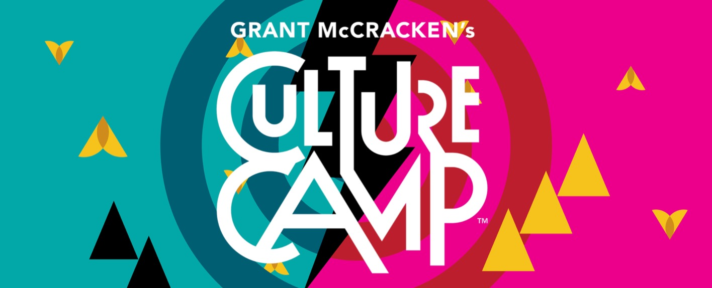
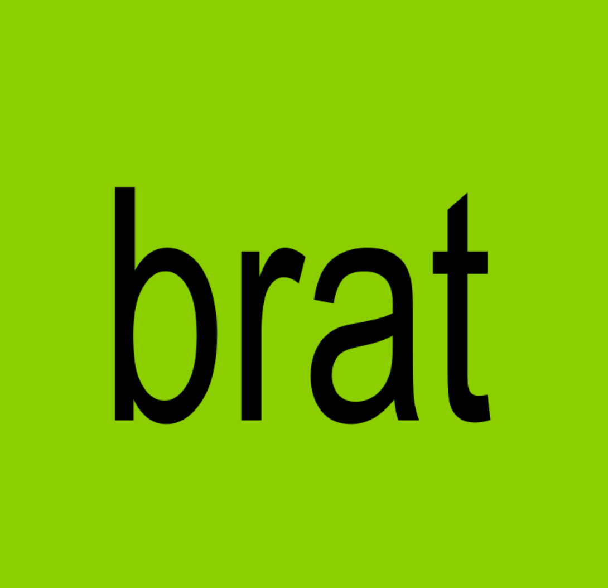
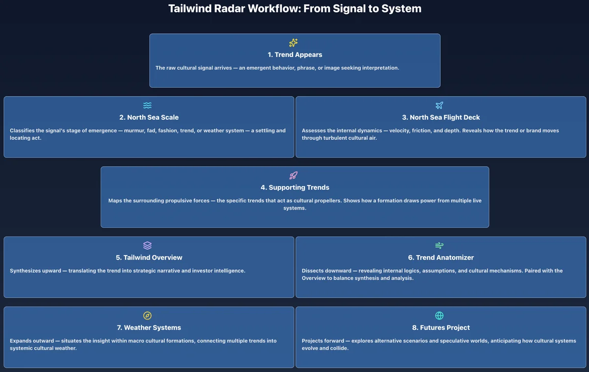

Introducing a masterclass from America's pioneering cultural anthropologist, Grant McCracken.
Learn how American culture actually works — and how to work with it. Grant draws on four decades of fieldwork, from Hollywood to Harvard, from Nike to Netflix.
You will learn how to use anthropology, ethnography, AI and new cultural instruments to read the future. This is not about trend spotting. It's about mastering the deep currents shaping the marketplace, the headlines, and our culture.
Good for your clients. Great for your career. Be an agent of change, not its casualty.
Built by Tailwind Radar · New York
What do these two tell us about American culture right now? We start here with the trends they represent — Anti-Wellness and a New Masculinity — to show how to spot, track and forecast change.

Culture Camp is for people who need to see culture clearly and act on it fast — strategists, brand leaders, marketers, investors, designers, and entrepreneurs who want more than trend decks and slogans. It’s a working masterclass built on three decades of fieldwork and a new partnership between anthropology and AI.
The big picture, made vivid and visual — meanings, rules, and trends across a turbulent North Sea of subcultures.
Anthropology’s ethnography and patterning fused with AI’s scale and speed — instruments for seeing more and faster.
Forecast emerging trajectories and help clients navigate what’s next — with methods like controlled & uncontrolled comparisons.
AI helps us map culture, detect trends, build futures. My job is to help you begin to use it culturally. The good news, it is culturally sophisticated right out of the box. You just start the conversation. I will teach you how.
We held our latest Culture Camp in January 2026. We are planning to hold the next one in June of 2026. If you are interested in coming, let us know at Pamela@tailwindradar.com.
Just between you and me, the January Camp went beautifully. We opened up new vistas on how to use AI to study culture and gave participants a series of prompts they can add to their AI to make it still more useful as a way to study culture. AI is an extraordinary tool for studying culture. We will show you how.
See the comments below in the section called “What participants said about the latest Culture Camp, January 2026.”
A lot is happening. Many people in strategy, marketing, design, and leadership are sitting tight, hoping the cultural storm will pass. But the storm isn’t going anywhere — it is who we are now.
Culture Camp is for people who want agency. Who want to see the real forces shaping business, media, and society. Who want to be the smartest person in the room on cultural matters — not its casualty.
Most programs turn participants into spectators. You listen. You take notes. You disappear. Culture Camp builds interaction into the structure — small rooms, rotating groups, collective problem-solving, and applied anthropology exercises. You collaborate. You work with the material. You try it out.
Typical camps create no lasting network. The group dissolves as quickly as it forms. Culture Camp treats the cohort as a formation — with pre-camp activation, an in-camp working culture, and post-camp channels that keep the connections alive.
Ideas evaporate if you don’t use them. Most programs end and the learning decays. Culture Camp creates a second learning wave through Office Hours with Grant — one call within three months to work through a live problem and apply the ideas to your own world.
Most programs teach theory but give you no chance to apply it until later, when you're alone and under pressure. Culture Camp offers optional case studies and live practice moments so you can test ideas immediately — on your terms.
Each lecture is participatory. If you have questions, patterns, sightings, objections, or inspirations — bring them in. We work in real time, together. The goal isn’t passive absorption; it’s active cultural sighting.
After the final January session, you enter The Interval — your field phase.
During this period:
This is where the Camp becomes real: you move from theory to capability.
This is where we gather again on Zoom to compare notes, test insights, pressure-test methods, and run the MCCC models through live examples. It is a collaborative check-in, a refinement phase, and a final sharpening of your cultural instruments.
A selection from the syllabus to show the range we work with:

"The CCO London Bootcamp was fantastic. Great for those who need a day of inspiration, and like the book, a hypodermic needle of insight. Both invaluable and game-changing."
— Collyn Ahart
"Just a quick note to say thanks for an enlightening workshop on Friday. You introduced me to several new big ideas and concepts throughout the session. Culture is so much more than just trend spotting and with many angles, levels and implications which I had previously not considered."
— Lee Sankey
"Just to thank you for an outstanding day. I particularly like your enthusiasm for generalists, where I also place myself. Your brilliantly funny use of metaphor and simile also made the day great fun."
— Roger Tredre
"The Bootcamp was a marvelous day. Amazing to be in a room full of so many folks yearning to bring a deeper kind of cultural thinking to their brands, agencies, corporations, endeavors. And the content was a brilliant mix of deep thinking and accessible content, slow and fast culture and more. It was inspirational to say the least. My poor wife had to deal with me going on about it at length. She’s gunning to go next time."
— Steve Nasi
"One of the minds that shape how I think is Grant McCracken. His blogging and books taught me to see the culture that was forming in front of me on the web as a place to truly study and take seriously. I see he's running an upcoming masterclass on culture, and I would highly recommend this to anyone who thinks about trends and consumer behavior. See if he has any spots left and get yourself there."
— Bud Caddell, Founder and CEO of NOBL
"I’ve known Grant McCracken for a long time, and he has always been a guiding light for me whenever I’m trying to make sense of culture, from how it shifts, how it shapes us, and how it shapes the work. His Master Class is classic Grant: sharp, generous, and designed to help leaders see the deeper currents under the surface of organizations and society. If you’re looking to expand your cultural intelligence and sharpen how you read the world, take a look."
— John Winsor, Executive Fellow, Harvard Business School
“This approach has me rethinking literally everything we do in our work.”
— Anonymous (Consultant / Agency advisor)
“Getting an introduction to this can make you near clairvoyant—you start to see patterns and nuances you never noticed before.”
— Irene Mendoza, CEO, Wasted Talent Studios
“I see how to actually put this into practice—with a mental model, tactics, and AI co-piloting. It's the most rigorous and practical framework I've found.”
— Matthew Muñoz, Co-Founder, New Kind
“You gain the wisdom to ask better questions and connect the dots. I feel more fearless and empowered.”
— Michael S. Mulvey, Professor of Marketing
“What I think I like most is the openness and generosity… you are democratizing the learning.”
— Barbara Raymond, Founder, The Public Good
“This class prepares you for the cultural shifts taking place so you can be on the innovative edge of change.”
— Gabrielle Dorr, PhD Candidate
Cultural anthropologist & author (14 books). Founder of the Institute of Contemporary Culture (ROM). Consulted for Netflix, Ford, State Farm, Google, Nike, TD Bank, and the White House. Taught at the Harvard Business School.
Co-architect of the Master Class Culture Camp. Strategy, design, and facilitation across brands and orgs. Pamela is a graduate of Syracuse University. She has hosted the Design Management and Innovation podcast.
Marketing professor, strategist, and author. Teaches at the University of Michigan’s Ross School of Business. Former Head of Strategy at Wieden+Kennedy New York and lead for social engagement at Beyoncé’s marketing agency. Author of the bestselling book For the Culture.
Leland Maschmeyer is the Co-Founder and Chief Executive Officer of COLLINS, a globally renowned design firm. He has been recognized as a Young Global Leader by the World Economic Forum and has led Chobani as Chief Creative Officer and Chief Brand Officer. His work has earned him numerous accolades.
$795 · Per seat · Select number of seats at checkout · 3-seat minimum
Register — Corporate / TeamAll payments are processed securely through Stripe. You’ll receive a confirmation email within 24 hours.
After payment, please email grant@tailwindradar.com with your preferred contact details (name, email, affiliation).
Should you need to cancel, Culture Camp will refund your ticket, minus a $50 transaction fee, up to seven days in advance of the first Masterclass session beginning January 8, 2026.
We reserve the right to cancel any event up to 14 days prior to the start date. In such a case, registrants will be notified and will receive a full refund or may attend a future Culture Camp within 12 months.
We are not responsible for travel expenses or costs incurred as a result of a cancellation.
We accept all major credit cards and payments via Stripe. If you request a refund, it will be processed through Stripe.
We reserve the right to modify these terms at any time. Changes take effect immediately upon posting. If we make material changes, we will note them here so you are aware.
If you would like to access, correct, amend, or delete personal information we have about you, register a complaint, or request more information, please contact us HERE.
Website: CultureMasterclass.com